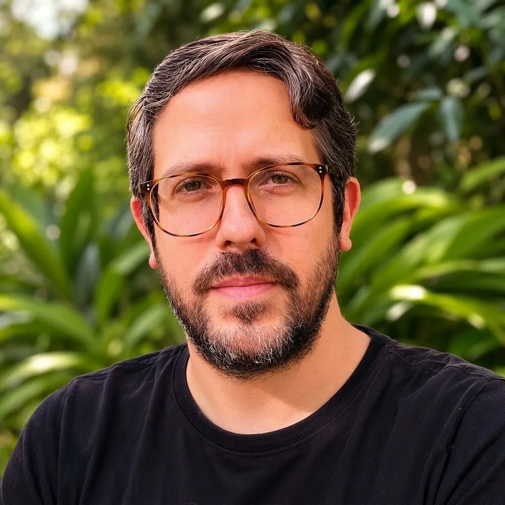
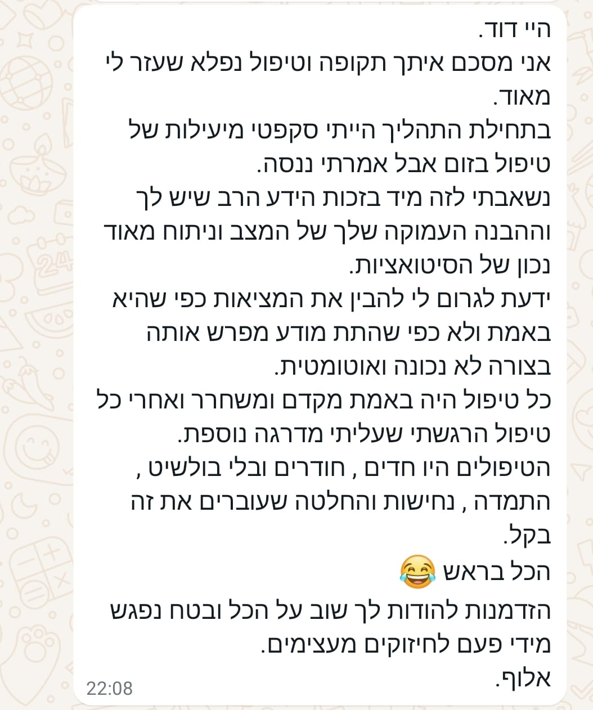
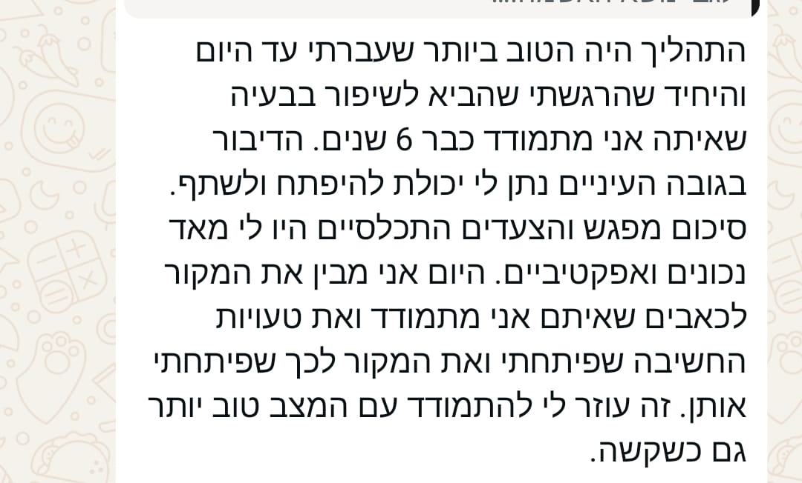
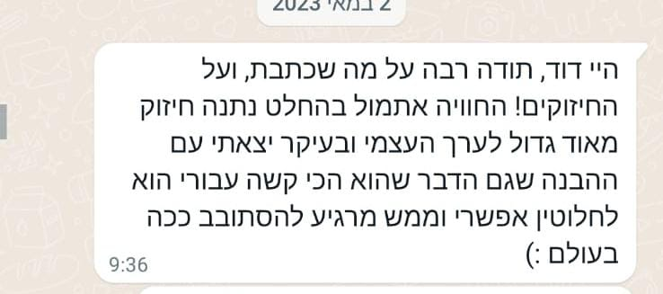

1
מה נלחם בי → מה מנסה להגן עליי
להבין את מערכת החרדה ולהפסיק לפרש כל תגובה פנימית כאויב.
מסע 8 הזהויות נועד לעזור לך לעבור מהזהות שחרדה מהחרדה, לזהות שמסוגלת לפגוש אותה בחמלה, יציבות ושליטה פנימית.
רוצה לחזור לסמוך על עצמי ←לא מבטיחים להעלים חרדה. בונים את האדם שיודע לפגוש אותה אחרת.“אני כאן. אני רואה שאתה מפחד. ואני לא הולך לשום מקום.”
אתה מנסה להירגע, להבין, לנתח ולמצוא את המחשבה שתגרום למחשבה המפחידה להיעלם. אולי אפילו חפרת בעבר שוב ושוב. אבל כשהחרדה חוזרת, גם אחרי כל מה שכבר למדת, היא מרגישה כמו הוכחה שמשהו עדיין לא בסדר.
אולי הבעיה כבר לא רק שאתה חווה חרדה.
אולי למדת לפחד מעצמך כשהחרדה מגיעה.
כשכל סימן פנימי מחייב תגובה, המערכת לומדת: “חרדה = סכנה, וכשהיא מגיעה אני חייב לעשות משהו.” ואז אתה כבר לא רק חווה חרדה. אתה חרד מהאפשרות שתהיה חרד.
זו לא אשמתך. זו תגובה שנלמדה. ובדיוק משום כך אפשר להתחיל לבנות תגובה חדשה.
מגיעה תחושה בגוף. הדופק משתנה. עוברת מחשבה שאתה ממש לא אוהב. אבל במקום להתחיל מלחמה פנימית, יש בתוכך קול אחר. יציב, חומל ומבוגר.
החרדה אולי עדיין נמצאת שם, אבל משהו מהותי השתנה: אתה האדם שמסוגל להחזיק את עצמו גם כשהמערכת סוערת.
במקום להמשיך לבנות עוד “בית חולים” מתחת לגשר, אנחנו עולים אל הגשר ועובדים על האדם שפוגש את הפחד.

בגיל 26 למדתי משהו ששינה את הדרך שבה אני מסתכל על פחד: אפשר להאמין מתוך סקרנות ואמונה, ולא מתוך פחד.
במשך שנים אנחנו לומדים להגיב לעולם מתוך “ומה אם?”, “אני חייב להיות בטוח”, “אני חייב להבין”. כשהתחלתי לראות את ההבדל בין חיים שמנוהלים מפחד לבין חיים שיש בהם מקום לפחד, בלי לתת לו לנהל אותם, נפתח בפניי כיוון אחר.
מאז העמקתי בתחום במשך 6 שנים ועבדתי עם אנשים בקליניקה. בעבודה שלי חיברתי בין עבודה עם המודע, עבודה עם תת־המודע, וגישה שפיתחתי וקראתי לה “הורות עצמית מיטיבה”.
להפסיק להיות עוד קול שמפחיד אותך מבפנים, ולהפוך לאדם שאתה צריך לידך כשקשה.
אפשר להבין מצוין למה אתה חרד, וברגע האמת לחזור לאותו דפוס. לכן המסע עובד בכמה שכבות שמשלימות זו את זו.
לזהות את המעגל האישי שלך, את הטריגרים ואת התגובות שמחזיקות אותו.
מדיטציות עומק, טראנס וסוגסטיה שמחברות בין ההבנה לבין התחושה והתגובה.
תרגול בין המפגשים כדי שהשינוי לא יישאר “מעניין”, אלא יהפוך לתגובה חדשה.
שמונה שבועות. בכל שבוע עוברים עוד שלב מהזהות שמפחדת ממה שקורה בתוכה, לזהות שיודעת להקשיב, להחזיק ולהנהיג את עצמה.
להבין את מערכת החרדה ולהפסיק לפרש כל תגובה פנימית כאויב.
למפות טריגר, מחשבה, תחושה והתנהגות ולזהות את נקודת הבחירה.
לבנות יכולת הדרגתית לשהות עם תחושה בלי להצית עליה שריפה נוספת.
לפגוש את החלק החרד בכוונה טובה, חמלה וסמכות פנימית.
עבודה חווייתית בטראנס, עוגני ביטחון ותרגול תגובה חדשה.
ללמוד לזהות, לתייג ולפגוש מחשבות בלי להישאב לוויכוח אינסופי.
לחזור בהדרגה לחיים, לערכים ולפעולות שהחרדה צמצמה.
לבסס זהות חדשה, עצמאות וכלים לשימור הדרך גם אחרי המסע.
מעטפת שמחברת בין המפגש הקבוצתי, התרגול האישי והרגעים שבהם החיים עצמם מזמינים תגובה חדשה.
מפגש קבוצתי שבועי של שעה ללמידה, תרגול והעמקה.
כל התכנים, ההקלטות, התזכורות ודפי העבודה במקום אחד.
תרגולי טראנס וסוגסטיה לחיבור בין הראש, הגוף והתגובה.
צעדים קטנים וברורים שמתרגמים את הלמידה לחיים עצמם.
אלה לא הבטחות שיווקיות. אלה הודעות אמיתיות מאנשים שמתארים שינוי בהבנה, בהתמודדות וביכולת לחזור לחיים.



אם המסר הזה פגש אותך, אפשר להצטרף לרשימת ההמתנה למחזור הבא. השארת הפרטים אינה מחייבת.
להצטרפות לרשימת ההמתנה ←רוצה לשאול משהו לפני ההרשמה? לשיחה אישית ב־WhatsAppלא. המטרה היא לבנות יכולת יציבה לפגוש מחשבות ותחושות בלי להיבהל מעצמך ובלי לתת להן לנהל את חייך. אצל אנשים רבים שינוי היחסים עם החרדה משפיע גם על עוצמת המעגל, אך אין כאן הבטחה להיעלמות מוחלטת.
התכנים וההקלטות מרוכזים באפליקציה המלווה. לפני פרסום הדף כדאי להוסיף כאן את מדיניות ההקלטות המדויקת שלך.
זהו תהליך קבוצתי מובנה. הוא אינו מחליף טיפול אישי או מענה חירום כאשר אלה נדרשים.
התרגול נבנה כדי להשתלב בחיים ולא להפוך לעוד מטלה כבדה. לפני הפרסום אפשר לציין כאן את מסגרת הזמן המדויקת שאתה מבקש מהמשתתפים.
מתחילים בבדיקת התאמה קצרה, שבה נבין מה אתה חווה, מה כבר ניסית והאם המסגרת הקבוצתית מתאימה לצרכים שלך כרגע.